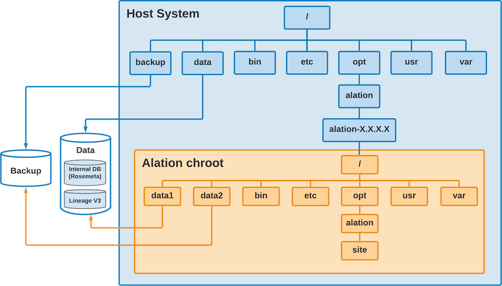

Alation Architecture¶
Customer Managed Applies to customer-managed instances of Alation
This page describes the architecture of Alation’s on-premise installation. It describes the structure of Alation’s chroot environment and its application stack. It doesn’t cover the architecture of Alation Cloud Service. Alation Cloud Service runs on a scalable architecture that’s fully maintained by Alation.
chroot Environment¶
The Alation application stack runs inside a chroot environment. In a
nutshell, the chroot is like a virtualized OS environment. Alation has
its own set of system libraries and system configuration files that are
independent of the host system. For example, /etc on the host is
independent of the /etc inside the Alation chroot.
System configuration changes on the host usually don’t affect the Alation chroot environment.
For example, changes to /etc/krb5.conf on the host don’t affect Alation.
The exception is /etc/hosts. See Editing /etc/hosts.
The Alation chroot is located at /opt/alation/alation-X.X.X.X,
where X.X.X.X represents the version of Alation that’s installed.
Starting from 2021.4, the Alation chroot uses Red Hat UBI Init 8.4. From 2020.4 to 2021.3, the chroot uses CentOS 8 binaries. Prior to 2020.4, the chroot uses CentOS 7.6 binaries. Alation patches the binaries when CentOS or Red Hat release critical fixes.
The Data disk has the Alation data files, and the Backup disk has the Alation backup files. By default, Alation mounts the disks in the locations shown in the following table. You can change the locations during installation.
System |
Data Disk |
Backup Disk |
|---|---|---|
Alation chroot |
|
|
Host System |
|
|
You can transfer files in and out of chroot by using either the Data or Backup disk as an intermediate location.
Accessing the chroot Environment¶
The Alation chroot environment is also called the Alation shell. You can enter the Alation shell to perform maintenance, monitoring, and other actions.
Use SSH to connect to the Alation server.
Enter the Alation shell using the following command:
sudo /etc/init.d/alation shell
To leave the Alation shell, use the exit command.
Open Connector Framework (OCF)¶
The Open Connector Framework (OCF) makes it so Alation can connect to sources not covered by Alation’s built-in connectors.
OCF must be installed on the host system with the Alation application, but outside of the chroot environment.
OCF consists of Alation Connector Manager (agent) and some connectors.
Alation Connector Manager handles tasks such as installing, restarting, or updating connectors. You can perform these tasks from the Manage Connectors page.
The individual connectors make it so Alation can connect to data sources such as a database or BI server.
OCF relies on Docker. Alation Connector Manager and the connectors are each installed in their own Docker container. You can use the Alation Container Service to help install Docker.
See the Open Connector Framework documentation for more information.
Alation Analytics¶
Alation Analytics helps data analysts and stewards drive data catalog adoption at their organizations. Alation Analytics is a PostgreSQL database that gathers usage data from the internal application database (Rosemeta). You can then view the usage data in the Alation Catalog.
Alation Analytics should be installed on a separate server for optimal performance. The default installation directory is /opt/alation-analytics. The following diagram shows the recommended setup. Alation Analytics can be installed on the same host as Alation, but Alation doesn’t recommend it. When Alation Analytics is installed on the same host as Alation, it resides under /opt/alation-analytics on the host system (not in the chroot).
The Alation Analytics server consists of the following components:
When Alation data gets updated, RabbitMQ takes the updates, queues them up, and forwards them to Transform. RabbitMQ also takes management requests from Alation. For example, RabbitMQ handles whitelisting of IP addresses so third-party tools can interact directly with Postgres.
Transform consumes and massages data from RabbitMQ and puts it into Postgres.
The Postgres container holds the Alation Analytics V2 database. Data queries from Alation Compose go directly to the Alation Analytics Postgres database. They do not go through RabbitMQ. Third-party tools may also query directly against Alation Analytics Postgres.
You can configure the connection between Alation and Alation Analytics through alation_conf. See Using alation_conf for help working with alation_conf.
For an in-depth explanation of the ETL process, see Alation Analytics V2 ETL. See Alation Analytics for more general information.
Application Stack¶
The following diagram shows the application stack of Alation. All the components are critical for operation. A description of each component follows the diagram.
{kind=link}
Supervisor¶
Supervisor controls many of the Alation processes and automatically restarts them if they fail. Supervisor tries to spawn a failed process 5 times before aborting. Supervisor controls the following processes.
uWSGI
KVStore
Elasticsearch
Event Bus
Lineage
Celery
Taskserver
Connector
You can use Supervisor to manually start and stop these components. You can start and stop them all at once or individually.
In an HA environment, Supervisor runs the replication process on the Secondary instance.
Nginx¶
Nginx serves the Alation UI. All the users connect to Nginx. Alation API calls are also routed through Nginx. Nginx forwards requests to uWSGI.
uWSGI¶
uWSGI is the web server for Alation. uWSGI powers all user actions in the UI. uWSGI uses Django to process http requests.
Django¶
Django is the web framework that uWSGI uses to process http requests. It uses Postgres and KVStore for metadata storage. Django uses Elasticsearch for powering the Alation Search feature. Django queues such back end jobs as Metadata Extraction and Query Log Ingestion in Redis.
Django provides a shell so you can interact with it via the command line. Sometimes you may need to perform actions in the Django shell. For example, you may use the Django shell when setting up Alation to use single sign-on authentication for AWS data sources. Be careful when using the Django shell, and only use it as directed by Alation.
Postgres¶
Postgres is a PostgreSQL DB that has all the data ingested into Alation and is critical to Alation operation. Postgres consumes most of the Data disk space.
KVStore¶
KVStore or Key-Value store is a custom DB implemented on top of RocksDB and has all queries ingested into Alation.
Elasticsearch¶
Elasticsearch powers all the search functionality in Alation.
Event Bus¶
The Event Bus was introduced in version 2021.4. The Event Bus is a middle layer that provides asynchronous messaging between server components. For example, metadata extraction stores messages related to lineage in the Event Bus. The Lineage service can then use those stored messages to create lineage graphs.
Lineage¶
Starting with 2021.4, Lineage V3 is a microservice operating inside the Alation chroot environment. Lineage creates, stores, and retrieves lineage data in the Catalog. Lineage consumes lineage events via the Event Bus and stores the information in the Lineage database. It can then retrieve this information from the database to power lineage diagrams in the Alation UI.
Redis¶
Redis caches front end data and queues jobs for back end processing.
Celery¶
Celery is the main scheduler and executor for back end jobs. Celery is a process pool. It executes jobs queued inside Redis. It also performs all long-running and periodic back end jobs, such as:
Automated Metadata Extraction
Profiling
Query Log Ingestion
Lineage generation
Database object popularity computation
Lexicon
Query Scheduling
Taskserver¶
Taskserver implements Metadata Extraction, Profiling and Query Log Ingestion from various databases and BI tools.
Connector¶
Connector submits queries from the Compose Query tool to enterprise databases and reads the query results.
More Information¶
Refer to the following resources for more information on working with the application stack.
Using Alation Actions to start and stop components
Using alation_conf to configure components